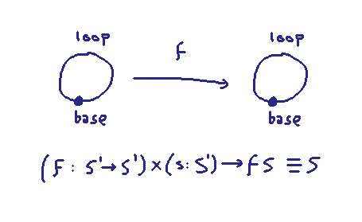
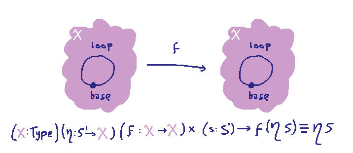

More Thoughts on Braids
I wanted to try to further develop a hunch I had that braid groups ought to emerge out of
HoTT and parametricity in a certain way. Currently I'm stuck trying to do a warm-up exercise
of showing that representing even trivial 1-stranded "braids" works correctly.
Trivial Fact
Here's a pretty trivial fact:
If I have a function $f$ from the circle to the circle, such that it maps every point to itself,
I know exactly what function I have. It's the identity.

In other words, the type $(f : S^1 \to S^1) \x (s : S^1) \to f\ s \equiv s$ is contractible. This is true because
by extensionality it's equivalent to $(f : S^1 \to S^1) \x f = \rid$, and any type
that looks like a pair $(x : A) \x x \equiv a$ for a constant $a : A$ is contractible.
Here's a less trivial thing that I think should be true:

If I have a type $X$ and the circle $S^1$ sits inside it somehow via a function $\eta: S^1 \to X$,
and a parametric polymorphic function $f : X \to X$ that preserves $\eta$, then I also think I
know exactly what function I have, and $f$ is the identity.
This is meant to be the trivial case of my "parametricity + HoTT = braids" hunch. It's saying:
the number of elements of the braid group on one strand is exactly one.
However, I get stuck at actually proving that the type
\[ (X:\rset) (\eta : S^1 \to X) \to (f : X \to X) \x (s : S^1) \to f\ (\eta\ s) \equiv \eta\ s \qquad (*)\]
is contractible under appropriate parametricity assumptions. I can get pretty far; I can convince myself
that $f$ really is the identity function, but I can't seem to nail down that the path $f\ (\eta\ s) \equiv \eta\ s$
(which witnesses the fact that $f$ preserves $\eta$) is uniquely determined.
Proof Sketch
Suppose we have a map of type $(*)$. Then in particular we have the first projection of the pair it spits out, call it
\[h_X : \{X:\rset\} (\eta : S^1 \to X) \to X \to X\]
We assume $h$ is parametric, so we also have something that tells us $h$ preserves any binary relation, given
a pair of related $\eta$s:
\[\begin{array}{l}
h_\star : \{X_1\ X_2:\rset\} ({\sim} : X_1 \to X_2 \to \rset)\\
\qquad (\eta_1 : S^1 \to X_1)(\eta_2 : S^1 \to X_2) (\eta_\star : (s : S^1) \to \eta_1\ s \sim \eta_2\ s) \\
\qquad (x_1 : X_1)(x_2 : X_2) (x_\star : x_1 \sim x_2 ) \\
\qquad \to h_{X_1}\ \eta_1\ x_1 \sim h_{X_2}\ \eta_2\ x_2
\end{array}\]
Let's say that if we have $(X:\rset)(\eta : S^1 \to X) (x : X)$ then we'll write the evident eliminator map
$(1 + S^1) \to X$ as $(x|\eta)$. We can construct:
\[\begin{array}{l}
\bar h : \{X : \rset\} (\eta : S^1 \to X) (x : X) \to h_X\ \eta\ x \equiv (x|\eta)\ (h_{1+S^1}\ \binr\ \binl)\\
\bar h\ \eta\ x = h_\star\ (\lambda a b . b \equiv (x|\eta)\ a)\ \binr\ \eta\ (\lambda\_.\mathsf{refl})\ \binl\ x\ \mathsf{refl}
\end{array}\]
What happening here is
- we choose $X_1 := 1 + S^1$ and $X_2 := X$.
- we choose a functional relation, namely the graph of $(x|\eta)$, as the relation $\sim$.
- we choose $\eta_1 := \binr$ $\eta_2 := \eta$.
- the relator $\eta_\star$ can just be the constant reflexivity path. By
the previous choices we made, it needs to show
$(x|\eta)\ (\binr\ s) \equiv \eta\ s$ and that's the same as $\eta\ s\equiv \eta\ s$.
- we choose $x_1 := \binl$ and $x_2 := x$ and $x_\star := \mathsf{refl}$.
The conclusion $ h_X\ \eta\ x \equiv (x|\eta)\ (h_{1+S^1}\ \binr\ \binl)$ of $\bar h$ tells
us that if we know what the value of $h_{1+S^1}\ \binr\ \binl : 1 + S^1$ is ---
just one special case of $h$'s behavior --- then we know the value
of $h_X$ everywhere for every $X$.
But, being a member of the type $1 + S^1$, it can either be $\binl$, in which case
\[ h_X\ \eta\ x \equiv (x|\eta)\ \binl \equiv x \]
or it could be $\binr\ s$ for $(s:S^1)$, in which case
\[ h_X\ \eta\ x \equiv (x|\eta)\ (\binr s) \equiv \eta\ s \]
In other words, we know that $h_X\ \eta$ is either the identity $X \to X$,
or it's a constant map $\lambda x . \eta\ s$ for some constant $s$.
But we can dispatch with the possibility that it's a constant map, by considering
the fact that we know $h$ preserves $\eta$. A constant map $X \to X$ would collapse
the image of the circle under $\eta$ to a single point, so there's so way that that could
preserve the circle.
Extra Loops?
So we have the information that $h_X\ \eta$ must be exactly the identity map $X \to X$.
We're left with the second component of the pair that $(*)$ outputs. It seems like we want to show that
the type
\[ (X:\rset) (\eta : S^1 \to X) (s : S^1) \to h_X\ \eta\ (\eta\ s) \equiv \eta\ s \]
is contractible, i.e. if we plug in $h_X\ \eta$ being the identity, we would want to show
\[ (X:\rset) (\eta : S^1 \to X) (s : S^1) \to \eta\ s \equiv \eta\ s \]
is contractible. But that's false!
Where did we go wrong? Well, it would have been equally mistaken to start with
\[(f : S^1 \to S^1) \x (s : S^1) \to f\ s \equiv s\]
and immediately plug in $f = id$, and then try to prove the contractibility of
\[ (s : S^1) \to s \equiv s \]
It's the whole $\Sigma$-type that we want to show is contractible!
So I think I want to do my parametricity reasoning "all at once" on (*) somehow,
but I'm not sure how to do it. It seems important to instantiate $X_1 := 1 + S^1$ to get the
right outcome for understanding the underlying map $X \to X$, but when that map is hidden
away in the $\Sigma$, I seem to only be able to reasonably instantiate $X_1 := S^1$, because
there's no $x : X$ to send the unit to unless I've unpacked the argument of the $X \to X$.
So I'm stuck there for now.